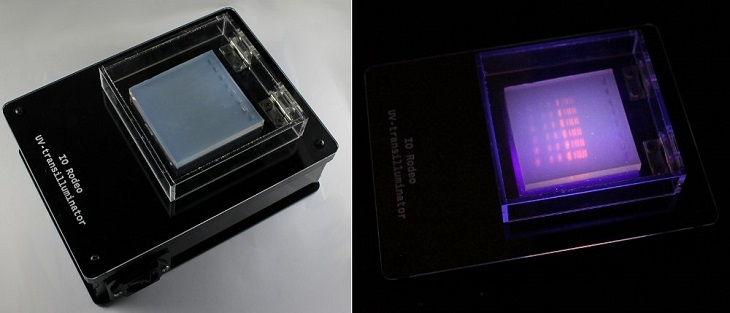

UV Transilluminators and Imaging on the Cheap

We've written about Gel Electrophoresis before, the punchline of which was that MiniPCR has good gel electrophoresis and imaging system for just $350. However, that system is for blue light. If you are trying to image faint bands of DNA stained with ethidium bromide you need a light source on the low end of 300 nm. There aren't equivalently cheap UV transilluminators, they average $2000 for the most basic models, but here's what we know of for cheaper solutions.
The cheapest commercial UV gel imaging system that we are aware of is the
EDVOTEK Midrange UV Transilluminator at $600. If you want to purchase an imaging system to go with it, the price will be $1100 for everything. This system comes with a camera.


If you are purchasing both an imaging system and the UV transilluminator, then the Accuris E3000 UV system for $830 will work out to roughly the same cost using their Smart Dock imaging system for $350. This system does not come with a camera but has an adapter to be used with a smartphone, which some might view as a plus.
On the DIY front, IORodeo has the best tutorial on building your own UV imaging system for under $100 in parts. It looks like they used to sell a kit, but no longer. They also have an older writeup in a different form on Instructables. Tutorial includes SVG files for the casing, a thorough parts list, and a very thorough step-by-step set of instructions with pictures of each step. It does not include any strategy for imaging, and you'll have to make a rig for your smartphone (or adopt one of the commercial systems above). Still as far as DIY instructions go, this is among the best we've ever seen.
Still, we wish that kit was still available, or that IORodeo sold UV transilluminators like they do blue LED transilluminators. Do you know of a cheaper UV imaging system? Let us know!